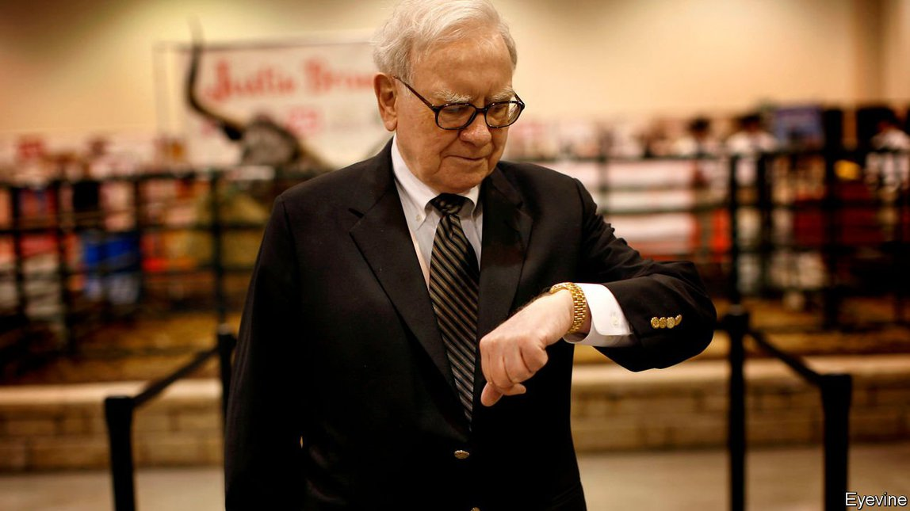

Text
2021-05-12T00:52:11+00:00
Time’s up
【首文】时间到
【首文】時間到
Warren Buffett should step aside for his chosen successor
巴菲特应该让位给自己选中的接班人
巴菲特應該讓位給自己選中的接班人
Berkshire Hathaway needs a leader who will take a fresh look at performance and governance
伯克希尔·哈撒韦需要一位以新角度审视公司业绩和治理模式的掌舵人
伯克希爾·哈撒韋需要一位以新角度審視公司業績和治理模式的掌舵人
AT 90, WARREN BUFFETT continues to lead Berkshire Hathaway, wearing the three hats of chief executive, chairman and chief investment officer. For years, the question of whom the feted investor would anoint as his successor to run the giant conglomerate has been the subject of boardroom gossip. The world now knows the answer, though only because of a slip of the tongue by Mr Buffett’s 97-year-old right-hand man, Charlie Munger, at the annual shareholders’ meeting on May 1st. That forced Mr Buffett to confirm that his heir apparent as chief executive is Greg Abel, 58, a trusted lieutenant who runs Berkshire’s non-insurance businesses.
九十岁的巴菲特依然掌管着伯克希尔·哈撒韦公司，身兼首席执行官、董事长和首席投资官三职。多年来，董事会里私下揣测不休的一大主题就是这位股神会选中谁来接手这庞大的企业集团。现在全世界都知道答案了，尽管只是因为巴菲特97岁的搭档查理·芒格（Charlie Munger）在5月1日的年度股东大会上说漏了嘴。这逼得巴菲特承认将接任首席执行官的是58岁的格雷格·阿贝尔（Greg Abel），这位很受他信任的副手目前负责伯克希尔的非保险业务。
九十歲的巴菲特依然掌管着伯克希爾·哈撒韋公司，身兼首席執行官、董事長和首席投資官三職。多年來，董事會裡私下揣測不休的一大主題就是這位股神會選中誰來接手這龐大的企業集團。現在全世界都知道答案了，儘管只是因為巴菲特97歲的搭檔查理·芒格（Charlie Munger）在5月1日的年度股東大會上說漏了嘴。這逼得巴菲特承認將接任首席執行官的是58歲的格雷格·阿貝爾（Greg Abel），這位很受他信任的副手目前負責伯克希爾的非保險業務。
The cack-handed way in which the succession plan became public fits a bigger pattern. Berkshire is a huge public company, with a stockmarket value of $645bn and an army of devoted retail investors. It is, though, structured and run in much the way it was when Mr Buffett took it over in the 1960s. He has never hidden his reluctance to retire. He once joked that he’ll step down five years after he dies. However, Berkshire needs to make changes if it is to keep up with the times—and that includes having a new person at the top.
继任人计划以这种笨拙的方式公之于众，符合这家公司的一个整体模式。伯克希尔是一家巨型上市公司，股票市值达6450亿美元，有一大批忠实的散户投资者。但它的结构和运作方式大体上还是上世纪60年代巴菲特接管时的样子。巴菲特也从不掩饰不愿退休的态度，他曾开玩笑说会在自己离世五年后卸任。然而，伯克希尔若要跟上时代的步伐就必须做出改变，包括更换最高负责人。
繼任人計劃以這種笨拙的方式公之於眾，符合這家公司的一個整體模式。伯克希爾是一家巨型上市公司，股票市值達6450億美元，有一大批忠實的散戶投資者。但它的結構和運作方式大體上還是上世紀60年代巴菲特接管時的樣子。巴菲特也從不掩飾不願退休的態度，他曾開玩笑說會在自己離世五年後卸任。然而，伯克希爾若要跟上時代的步伐就必須做出改變，包括更換最高負責人。
That is not to denigrate Mr Buffett or his achievements. In his 56 years in charge, Berkshire’s total returns have been double those of the S&P 500 index. He can claim to be the greatest value-investor who ever lived. He has instilled an admirable trust-based culture at Berkshire. The dozens of fawning books he has inspired constitute their own genre of business publishing.
这并不是贬低巴菲特或是他的成就。在执掌伯克希尔的56年里，他取得的总回报是标普500指数的两倍。他可以说是史上最伟大的价值投资者。他给伯克希尔注入了一种值得赞美的基于信任的文化。几十本颂扬巴菲特的书作在商业出版界已然自成一派。
這並不是貶低巴菲特或是他的成就。在執掌伯克希爾的56年里，他取得的總回報是標普500指數的兩倍。他可以說是史上最偉大的價值投資者。他給伯克希爾注入了一種值得讚美的基於信任的文化。幾十本頌揚巴菲特的書作在商業出版界已然自成一派。
However, cracks have started to appear. One is Berkshire’s financial performance, which has been mediocre over the past decade. Mr Buffett has made some costly mistakes, such as bad bets on airlines and Kraft Heinz, a consumer-goods giant. He has admitted to overpaying for acquisitions, including a big metal-parts-maker that later wrote off $11bn. Were it not for a valuable stake in Apple, the bottom line would have looked limper still. Suspicion is growing that Mr Buffett has lost his magic touch in allocating capital, perhaps because, like other star fund managers, he is too big to outperform the market by much.
但问题已经开始显现。一是伯克希尔的财务业绩，过去十年一直表现平平。巴菲特犯了一些代价高昂的错误，比如对几家航空公司和消费品巨头卡夫亨氏的糟糕押注。他承认在一些收购上出价过高，包括一家最终冲销了110亿美元的大型金属零件制造商。如果不是持有的苹果股份的价值高涨，伯克希尔的盈利还会更显低迷。人们越来越怀疑巴菲特在资本配置上魔力不再，这也许是因为，跟其他明星基金经理一样，他的投资规模太大了，已经难以大幅跑赢大市。
但問題已經開始顯現。一是伯克希爾的財務業績，過去十年一直表現平平。巴菲特犯了一些代價高昂的錯誤，比如對幾家航空公司和消費品巨頭卡夫亨氏的糟糕押注。他承認在一些收購上出價過高，包括一家最終沖銷了110億美元的大型金屬零件製造商。如果不是持有的蘋果股份的價值高漲，伯克希爾的盈利還會更顯低迷。人們越來越懷疑巴菲特在資本配置上魔力不再，這也許是因為，跟其他明星基金經理一樣，他的投資規模太大了，已經難以大幅跑贏大市。
Berkshire’s governance needs rethinking, too. For all the autonomy its divisions enjoy, Mr Buffett still has to sign off on the big decisions. He has special shares with greatly enhanced voting power. The board is stacked with Friends of Warren; five of its 14 members are 89 or over. Berkshire’s failure to write or disclose its policies on investor priorities such as climate risk and diversity irks some shareholders, including big institutions like BlackRock. When investors called Buffett-style governance “unique” they used to mean it as a compliment. No longer.
伯克希尔的治理模式也需要反思。虽说公司各部门各司其职，但重大决策还是需要巴菲特拍板。他持有的特殊股份极大地加强了他的投票权。董事会里满是“巴菲特的朋友”，14名董事中五人在89岁或以上。伯克希尔没有就气候风险和多样性等投资者关注的议题制定或披露相关政策，引起了一些股东不满，包括贝莱德（BlackRock）等大型机构。投资者称巴菲特式的治理“独树一帜”，以往这是赞美，如今不是了。
伯克希爾的治理模式也需要反思。雖說公司各部門各司其職，但重大決策還是需要巴菲特拍板。他持有的特殊股份極大地加強了他的投票權。董事會裡滿是“巴菲特的朋友”，14名董事中五人在89歲或以上。伯克希爾沒有就氣候風險和多樣性等投資者關注的議題制定或披露相關政策，引起了一些股東不滿，包括貝萊德（BlackRock）等大型機構。投資者稱巴菲特式的治理“獨樹一幟”，以往這是讚美，如今不是了。
The company’s lousy disclosure looks out of step with the times, too. Berkshire offers little beyond mandatory filings and the occasional press release. It does not hold analyst meetings or investor days; it does not even have a functioning investor-relations department. The closest thing to outside scrutiny it tolerates is the three hours of friendly shareholders’ questions, teed up by a genial reporter from CNBC, at the annual conclave.
伯克希尔的信息披露不足，也显得与时代格格不入。除了必须提交的文件和偶尔发布的新闻稿之外，它很少公开其他信息。它不举行分析师会议，没有投资者日，甚至没有一个正常运作的投资者关系部门。在外部监督上，这家公司能接受的就是年度股东大会上三小时气氛友好的问答，由一位和蔼可亲的CNBC记者主持。
伯克希爾的信息披露不足，也顯得與時代格格不入。除了必須提交的文件和偶爾發布的新聞稿之外，它很少公開其他信息。它不舉行分析師會議，沒有投資者日，甚至沒有一個正常運作的投資者關係部門。在外部監督上，這家公司能接受的就是年度股東大會上三小時氣氛友好的問答，由一位和藹可親的CNBC記者主持。
The company needs to start dealing with these deficiencies now, or face the increased risk of a drama—such as an attempt by activist investors to break up Berkshire, or a regulatory rumble—when Mr Buffett does eventually leave. There is no need to stoop to the box-ticking corporate conformity that he so loathes, an aversion reflected in his public criticism of the metrics and questionnaires wielded by ESG campaigners.
伯克希尔现在就要着手补足这些短板，否则等到巴菲特最终离任时，公司面临戏剧性变化的风险将加大，比如激进投资者要求拆分伯克希尔，或者引来监管部门不满。但也没必要屈从那种条条框框式的企业治理方式，巴菲特对此深恶痛绝，曾公开批评环境、社会和企业治理活动人士拿各类指标和问卷当令箭。
伯克希爾現在就要着手補足這些短板，否則等到巴菲特最終離任時，公司面臨戲劇性變化的風險將加大，比如激進投資者要求拆分伯克希爾，或者引來監管部門不滿。但也沒必要屈從那種條條框框式的企業治理方式，巴菲特對此深惡痛絕，曾公開批評環境、社會和企業治理活動人士拿各類指標和問卷當令箭。
Get the job done, Warren
交卷吧，沃伦
交卷吧，沃倫
New blood and greater openness would be a good start. Naming a successor is a first step. The next should be to replenish the board with outside appointments. Investors must get the information they need to make informed decisions, including analysis of where the firm is creating value, and the tax and other synergies that justify keeping the conglomerate intact.
可以从注入新鲜血液和提高透明度开始。指定接班人是第一步。接下来应该任命外部人士来补充董事会。投资者要能获得必需的信息以做出明智的决定，包括对公司正在何处创造价值的分析，以及能证明应当保持现有企业集团结构不变的税务状况和其他协同效应。
可以從注入新鮮血液和提高透明度開始。指定接班人是第一步。接下來應該任命外部人士來補充董事會。投資者要能獲得必需的信息以做出明智的決定，包括對公司正在何處創造價值的分析，以及能證明應當保持現有企業集團結構不變的稅務狀況和其他協同效應。
The biggest question of all is when Mr Buffett should go. He may want to die at his desk, but the longer he stays, the more he risks becoming a liability. He said at this year’s AGM that bad leaders are the biggest risk companies face. Good leaders who stay too long are not far behind. Mr Buffett has had a wonderful run. But now that the succession is out in the open, it is time to move aside and let Mr Abel fix what isn’t working. ■
最大的问题是巴菲特何时该离任。他可能想在办公桌前坚持到生命最后一刻，但他留任越久，就越可能成为公司的负累。他在今年的股东大会上说，糟糕的领导者是公司面临的最大风险。但好的领导者如果在任太久，结果也好不到哪里去。巴菲特的掌舵成就辉煌。但现在接班人既已公开，是时候退位让贤，让阿贝尔来解决问题了。
最大的問題是巴菲特何時該離任。他可能想在辦公桌前堅持到生命最後一刻，但他留任越久，就越可能成為公司的負累。他在今年的股東大會上說，糟糕的領導者是公司面臨的最大風險。但好的領導者如果在任太久，結果也好不到哪裡去。巴菲特的掌舵成就輝煌。但現在接班人既已公開，是時候退位讓賢，讓阿貝爾來解決問題了。